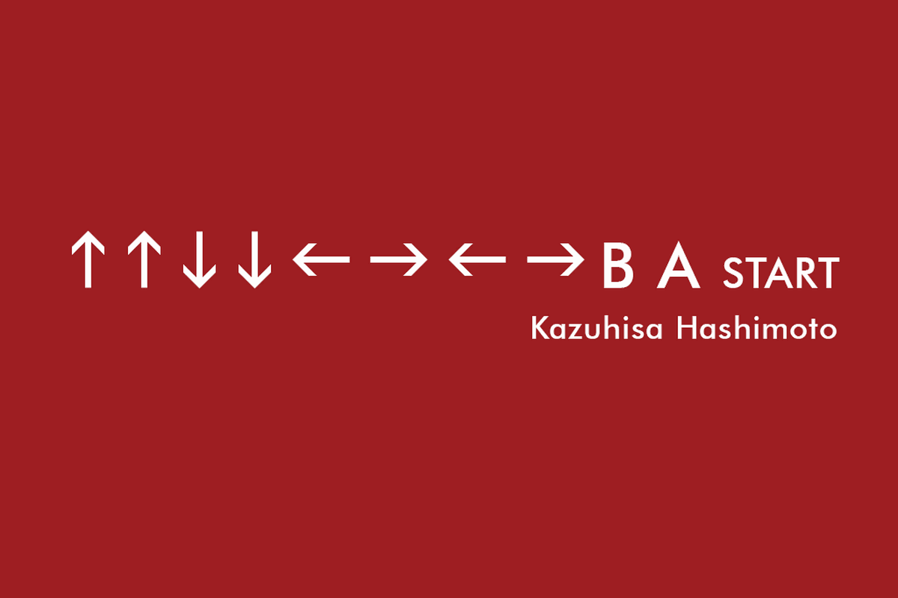

DO YOU KNOW KONAMI CODE?
If so, please enter it now.
Up, Up, Down, Down, Left, Right, Left, Right, B, A. It's called the Konami Code, and it often meant the difference between life and death in a video game back in the 1980s. Perform those button presses in the right sequence, and you'll unlock cheats that help you win.
Author: Ben Edwards Source: https://www.howtogeek.com/659611/what-is-the-konami-code-and-how-do-you-use-it/#:~:text=Up%2C%20Up%2C%20Down%2C%20Down,cheats%20that%20help%20you%20win.
